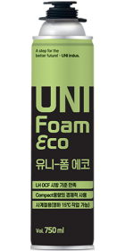
충진용 폼
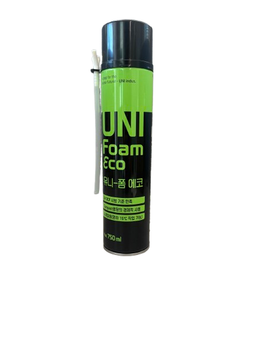
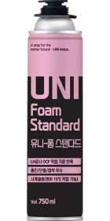
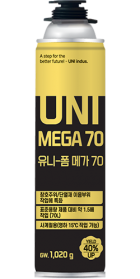
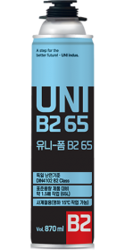
유니폼 B2 65
용량 870 mL
창호 프레임과 벽체 사이 등 시공 틈새를 채울 때 사용합니다. 현장 시방에 B2 성능 조건이 있으면 기술자료와 시험 조건을 대조해 적용 여부를 확인하세요.
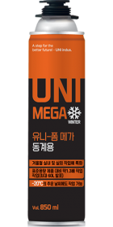
유니폼 메가 동계용
용량 850 mL
겨울철 창호 주변이나 벽체 이음부의 틈을 채우는 동계용 폼입니다. 작업 전 기술자료에서 사용 가능 온도를 확인하세요.
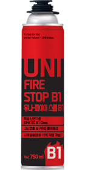
유니 파이어스톱 B1
용량 750 mL
난연 성능을 검토해야 하는 현장의 이음부나 틈새 충진에 사용하는 폼입니다. 방화구획은 해당 부위의 인정 시공 시스템과 적용 조건을 확인하세요.
접착·분사용 제품
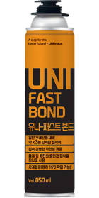
유니 패스트 본드
용량 850 mL
보드나 판재를 바탕면에 붙이는 작업에 사용하는 접착 폼입니다. 붙일 자재와 바탕면이 제품에 적합한지 기술자료에서 확인하세요.
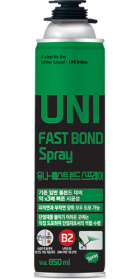
유니 패스트 본드 스프레이
용량 850 mL
접착제를 바탕면에 분사한 뒤 자재를 붙이는 작업에 사용합니다. 사용하려는 자재의 재질과 적용 가능 여부를 먼저 확인하세요.
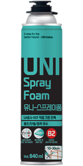
세척용 제품
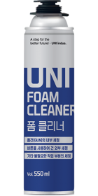
시험성적서
시공 부자재
우레탄폼 전용 건
건 타입 폼 캔을 장착해 창호 주변이나 보드 이음부의 틈에 폼을 분사하는 도구입니다. 작업 위치와 필요한 길이에 맞춰 모델을 선택할 수 있습니다.
- UNI-M3 Silver · 가벼운 모델로 좁은 틈 작업용 플라스틱 노즐이 제공됩니다.
- UNI-M1 Black · 스테인리스 스틸과 테플론 코팅을 적용한 모델입니다.
- UNI-M1L Black · 배럴 길이가 60cm로, 바닥이나 손이 닿기 어려운 위치에서 작업할 때 쓰입니다.
사용할 폼 캔과의 호환 여부는 구매 전 문의해 주세요.

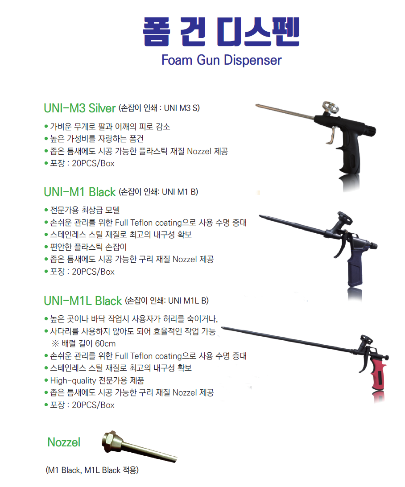